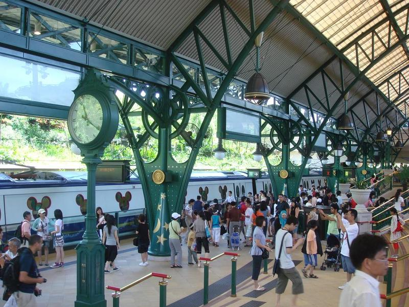

是起点也是终点，是开始也是结束；
是欢聚也是离散，是出发也是归宿。
从来没有一个地方，能汇集如许人的流动量，从来没有一个地方，能拥有如许悲欢离合。
从清晨到白昼，从黄昏到夜晚，从黑夜到黎明，数不清的脚印带着来各地的泥土。重重叠叠，密密麻麻踩上去；有红色的土来自山间，有褐色的土来自田野，有黑色的土来自城市，有白色的土来自海滨。聚拢又散失，堆积又泻落，没有一粒种子能在土里生根，如同没有一双脚步会在这里驻留；缘因――
这只是流动的浮土，
这仅是过往的月台。
这里有一个链接地址到http://ife.baidu.com
月台展延有任何一个城与城之间交接的地点，守望在任何一个城镇的边缘，它只是默默地等候，骚扰不停的是人们，为生活、为名利、为野心、为梦想……来来去去，忙忙碌碌，这是个制造离散的时代，列车频频靠站又开走，卸下一批旅客在月台，又从月台上载走了另一批。来的脚步掩盖了去的脚步，去的脚步也覆盖了来的脚步。轻快的脚步播着欢聚的愉悦，沉重的脚步负载着如许离愁，从容的脚步度向预定的目标，匆促的脚步显示心情的迫切，迟缓的脚步缠绕于厌倦，悠闲的脚步只为一次探访，也有犹豫的脚步，属于那迷失了自己的旅客。
多少次，我也曾被卸在月台，多少次，我也曾从月台离去，我不知道自己的脚步又显出什么？近年来，别离总多于团聚，失望总多于获得。寂寞、惆怅，和一份深沉的苍凉，常是我密切的旅伴。离去不是离去，心仍萦留于原地；归来不是归来，浮土又焉能扎根？
人生旅程中有无数的月台，生命的旅程中有无数的驿站。所有台和站，只是供中途小憩，只是供列车再次出发。别长期滞留，沉滞不是宁静，将使灵魂腐蚀；别长期停顿，停顿不是安定，将使生命萎靡。
是起点，但愿不是终点，
是开始，但愿不是结束，
是出发，归宿尚待寻求，
是离散，欢聚当可期待。
这里有个粗体字
携着轻便的行李－－装满信心和小小的愿望，我随时准备踏上人行的月台，只等待时间的列车到来，出发再出发！

文章作者 文章发表时间
是安定，将使生命萎靡。
是起点，但愿不是终点，
是开始，但愿不是结束，
是出发，归宿尚待寻求，
是离散，欢聚当可期待。
好看的图片
好看的图片
好看的图片
好看的图片
下面是一个表格，给表格加了一个border="1"好让你看出是个表格
| 表头 | 表头 | 表头 | 操作 |
|---|---|---|---|
| 1 | 2 | 3 | 操作 |
| 5 | 6 | 7 | 操作 |
| 9 | 10 | 11 | 操作 |